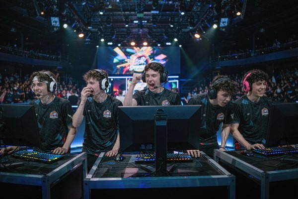
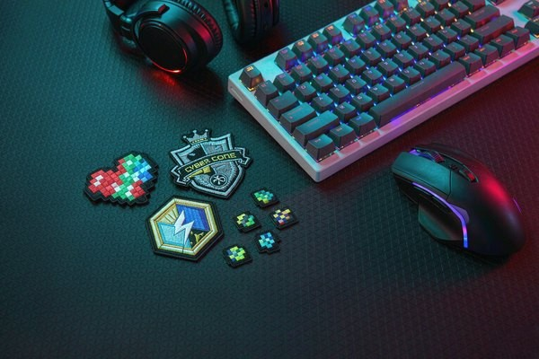
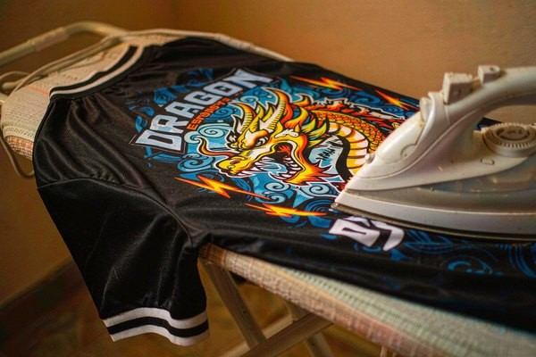

Gaming Patches: Esports Team Identity From Stage to Stream
Esports borrowed its uniform culture from traditional sports, and gaming patches came with it — but the audience, the artwork, and the garments are all different. A team crest has to survive both a tournament stage and a webcam close-up on stream. This guide covers the patch types that matter in esports, how pixel-art logos translate to thread, when to embroider and when to sublimate, and how to order for a roster plus a merch drop.

Why Esports Teams Wear Their Logo in Thread
The esports industry spent a decade copying traditional sports playbook items — franchising, drafts, jerseys — and the chest patch came along because it solves the same problem: five players in matching gear read as one team from the last row of an arena. But esports adds a constraint traditional sports never had. Every match is also a broadcast, and the camera is two feet from the jersey. A patch has to look right on a stage LED wall and in a Discord webcam thumbnail at 480p.
Patches also solve an economics problem. Gaming teams live and die by merch drops, and a patch is the cheapest physical product a team can ship — no sizing chart, no returns, no warehouse of unsold hoodies. Fans who will not spend $70 on a jacket will spend $8 on the badge for it, and the patch then advertises the jacket. Community servers, Discord clans, and campus gaming clubs run the same play at a smaller scale, exactly the identity logic we broke down in our sports team patches guide.
The Patches an Esports Program Actually Uses
- Team crest. The main logo on the left chest or sleeve. Embroidered, 2.5–3.5 inches, and the anchor for everything else.
- Player tag and number. In-game handle on the back or chest, like a jersey nameplate. Usually a separate smaller patch so rosters can share one jersey run.
- Rank and achievement badges. Rank emblems, tournament finishes, "season 12 champion" chips. These feed the collecting instinct that keeps fans buying every drop.
- Emote and meme patches. Chat emotes and inside jokes as pixel badges — the merch that sells out first, because it proves insider status.
- Sponsor chips. Small, regulation-neutral logos for orgs with sponsors. Same production run as the crest if colors allow.
Designing for Thread When Your Logo Lives on Screen
Gaming artwork is born glowing on a dark background, and that is the first thing to fix. Thread does not emit light — a neon logo on black fabric needs contrast engineering, not just color matching. Practical rules our digitizers apply:
- Keep the icon chunky. Blocky silhouettes — masks, helmets, animals, weapons — translate to embroidery beautifully. Thin line art and long gradient fades do not.
- Pixel art is a cheat code. Deliberately blocky pixel art styles align almost perfectly with stitch blocks, so the embroidered version looks intentional instead of simplified.
- Two to four colors, one of them dark. A dark border or background panel makes neon-adjacent thread colors pop the way they do on screen, and polyester thread holds those saturated shades through daily wash cycles.
- Watch text height. Handles shorter than four letters stitch cleanly; long gamertags need the 4 mm minimum letter height or a smaller, dedicated nameplate patch.

Embroidered vs Sublimated for Gaming Artwork
Gaming logos split into two families: bold flat-color marks that embroidery loves, and full-color gradients, glows and photoreal mascots that thread cannot reproduce. For the second family, sublimated patches print dye directly into the fabric with unlimited colors — the trade-offs are compared in our printed patches guide.
| Embroidered | Sublimated / Printed | |
|---|---|---|
| Best for | Crests, rank badges, chunky logos | Gradient glows, mascot art, photo logos |
| Color count | 2–4 thread colors | Unlimited, full CMYK |
| Texture | Raised, premium feel | Flat, smooth surface |
| Small text | Limited by letter height | Prints at any size |
| Merch feel | Collectible, "real" badge | Modern, vivid on stream camera |
Most orgs end up running both: an embroidered crest for the chest and a sublimated version of the same logo for jerseys where the artwork has glow effects. Since both come from one set of artwork files, adding the second variant to an order costs little. For application, gaming jerseys are usually performance polyester, which is exactly why gaming patches meant for them ship with iron-on backing — the construction logic is in our backing types guide, and iron-on is the one method that bonds cleanly to synthetic fabric without sewing.

Ordering for a Roster, a Drop, and a Season
Esports ordering has three separate quantities hiding in one project: the roster (5–10 jerseys), the staff and creator kit (10–30), and the merch drop (100–500). The efficient move is ordering the crest once for all three, then adding role-specific patches per group — player tags for the roster, "staff" chips for crew, limited variants for the drop. The sizing rules for each placement are in our patch size guide.
Timing follows the same rhythm as tournament seasons: finalize artwork 6–8 weeks before the drop or event, approve the digital proof early, and land stock 2 weeks out. Leftover drop stock is not waste — rank badges from this season become the collectibles that make next season's launch sell, and community teams can start as small as a single dozen patches since there is no minimum order. Fan patches on backpacks, laptop sleeves and jackets also keep the logo traveling through places a jersey never reaches.
One care note worth printing on your merch page: wash patched jerseys inside out on cold and skip the dryer when possible. Iron-on bonds handle synthetic-fabric care routines fine, but a hot dryer directly on the patch is the fastest way to lift an edge — and a two-line care instruction costs nothing while saving your support inbox a season of complaints.
Frequently Asked Questions (FAQ)
Q1: What size should an esports team crest patch be?
2.5 to 3.5 inches covers most chest and sleeve placements on gaming jerseys. Player tag patches run smaller, around 1.5 to 2 inches for the back nameplate position. Check your jersey template before ordering — panel seams limit the maximum width.
Q2: Can you embroider a gradient or glowing logo?
Not literally — thread cannot reproduce continuous gradients. The usual fix is banding the gradient into 2–4 flat thread colors, which often looks stronger than the original. If the glow effect is essential, a sublimated patch prints it exactly, and many teams run embroidered crests plus sublimated variants from the same artwork.
Q3: What backing works on polyester gaming jerseys?
Iron-on backing bonds well to performance polyester and is standard for jersey application. Sew-on adds durability for jackets and backpacks that see heavy use. Avoid adhesive backing for anything meant to survive more than one event day.
Q4: How many patches should a team order for a merch drop?
Community teams typically start around 50–150 per design; established orgs order 300–500 per drop. Because per-unit price drops sharply with quantity, many teams combine the roster crest order and the first merch drop into a single production run to hit a better price tier.
Q5: Can we order different patches for each player?
Yes — the standard approach is one shared crest run plus individual player tag patches with each handle and number. Since tags are small single-color designs, adding every roster member costs very little on top of the main run, and spares cover mid-season roster changes.
Conclusion: Stitch the Team Into Existence
An esports team exists in two places at once — the server and the stage — and a patch is the cheapest way to make it visible in both. Keep the crest chunky enough for thread, run sublimated variants when the artwork demands gradients, back everything for the synthetic fabric it will live on, and order once for roster, staff and merch together. Five players in matching patches look like an org; a thousand fans wearing the same badge make it one.
Send us your team logo — PNG, vector or a rough concept — and we will digitize it free, match your colors, and return a proof within 12 hours. No minimum order, from a five-stack of friends to a sponsored org. Request a free quote and get the badge on the jersey before the next split starts.